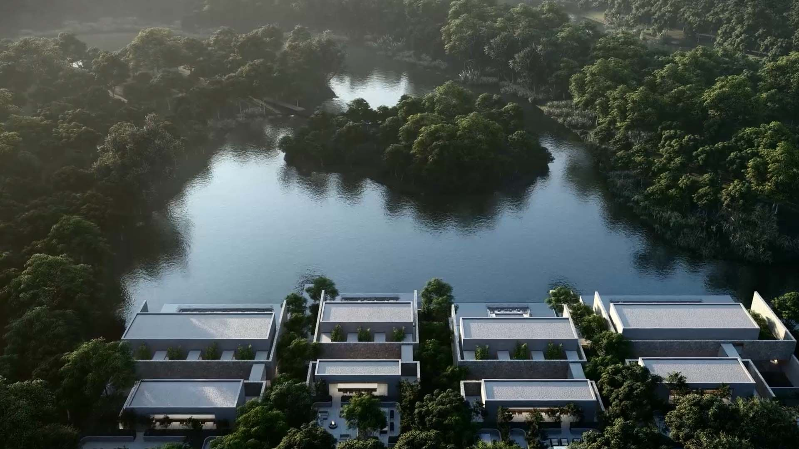
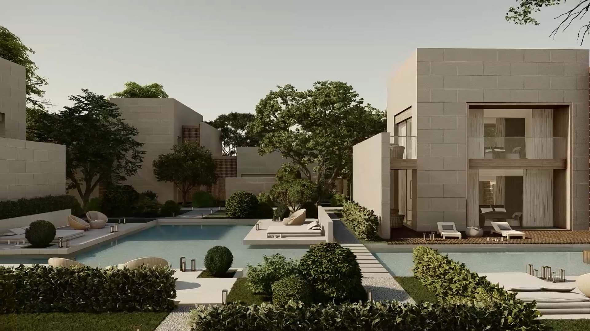
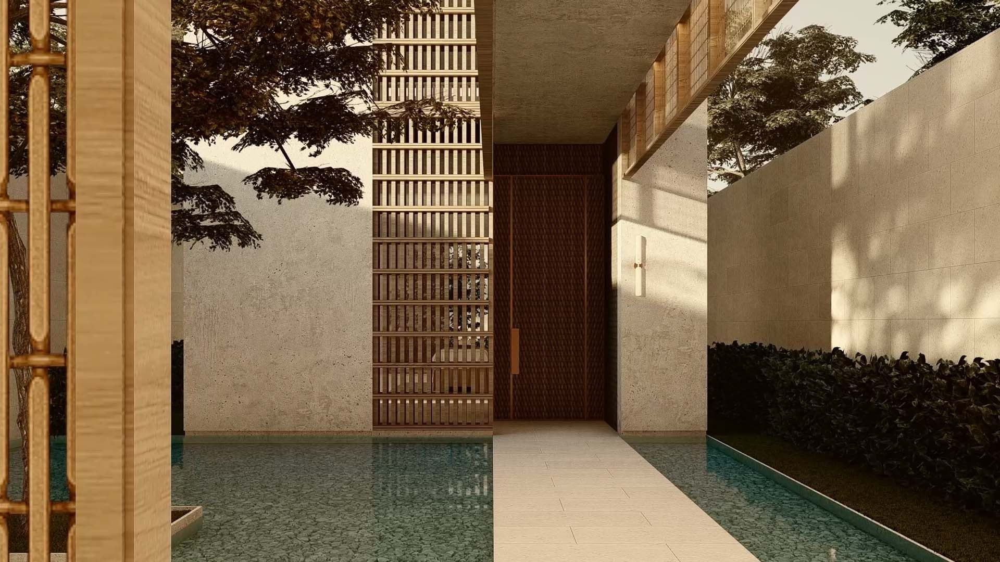
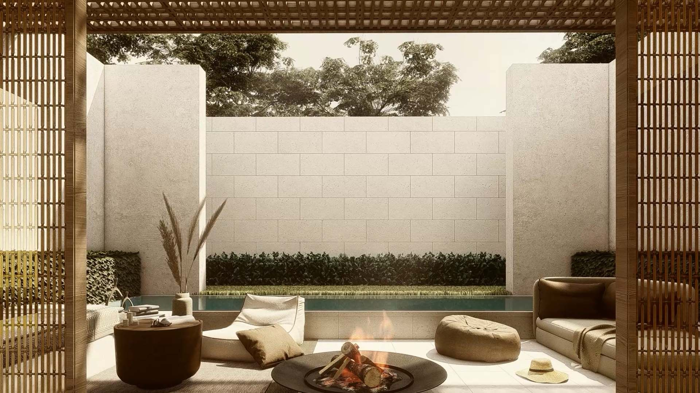
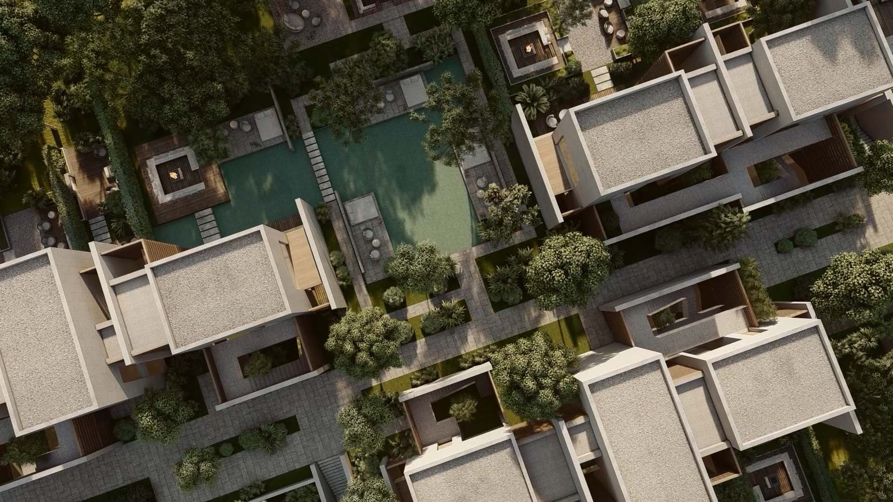
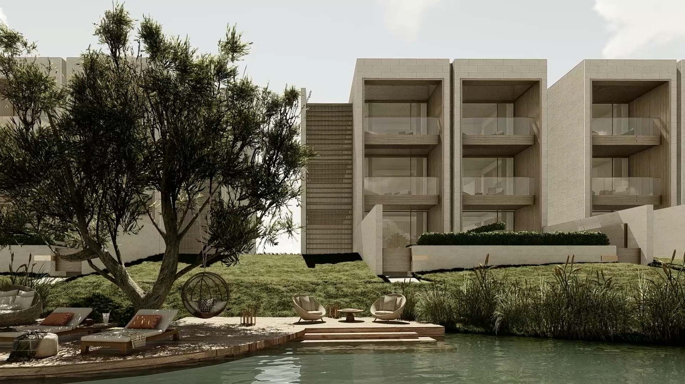
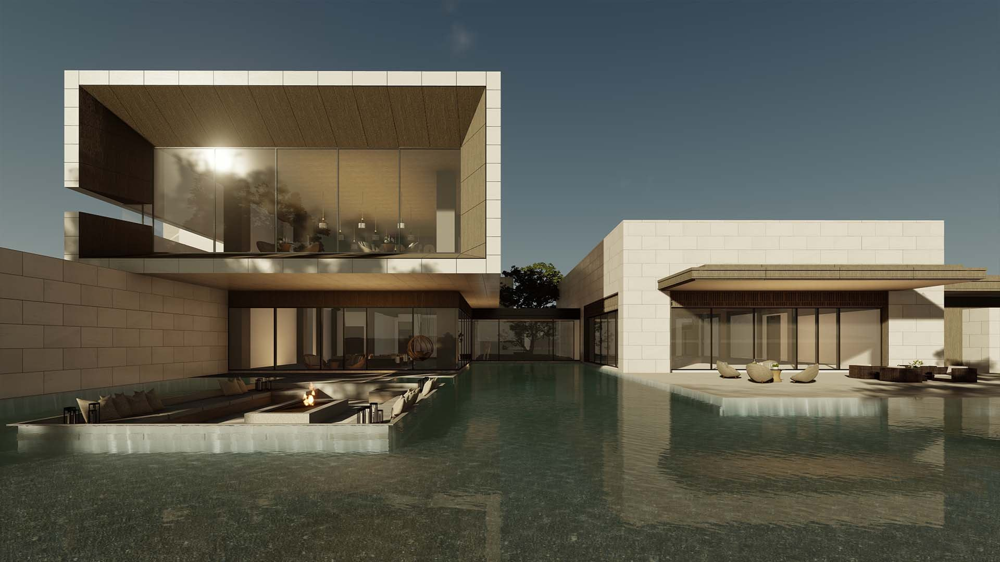
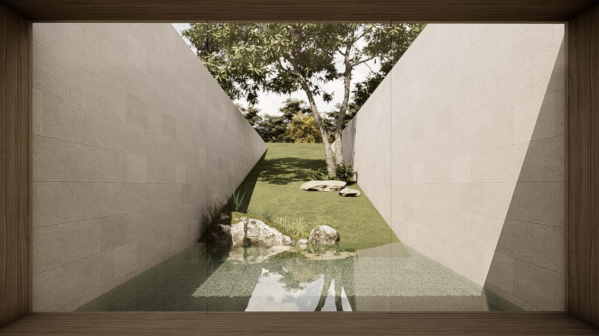
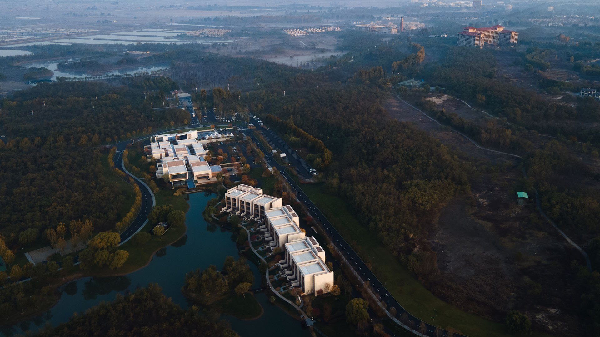

河北 · 秦皇岛
秦皇岛如是海英迪格
H2 项目档案 · 2021
InterContinental Hotels Group PLC (IHG)
全部作品
01项目介绍
建筑立面整体风格简约质朴，和优美的自然环境融为一体。将建筑“种”在森林里，“长”在河岸边实现自然与人相互依存的特殊格局。 采用院落式的布局，各个空间互相串联，移步易景，形成了如园林般的行走体验。虚实对比的秩序感打造了丰富的光影变化，营造了独特的疗愈度假氛围 。 顶级品质的度假环境且不失亲近怡人氛围。组团聚落式的布局，带来了丰富的共享庭院和邻里空间，将理想的生活方式融入度假生活，疗愈身心。
















02资料
- 地点
- 河北 · 秦皇岛
- 源档案年份
- 2021
- 档案酒店集团
- InterContinental Hotels Group PLC (IHG)
年份沿用原档案标注，并非经核实的竣工年份。源材料可能包含设计阶段图像。正式发布前，应确认现名称、项目状态、具体服务范围和图片署名。